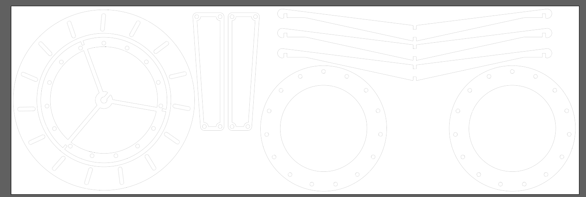
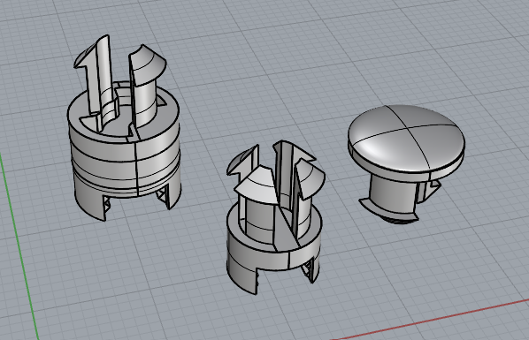
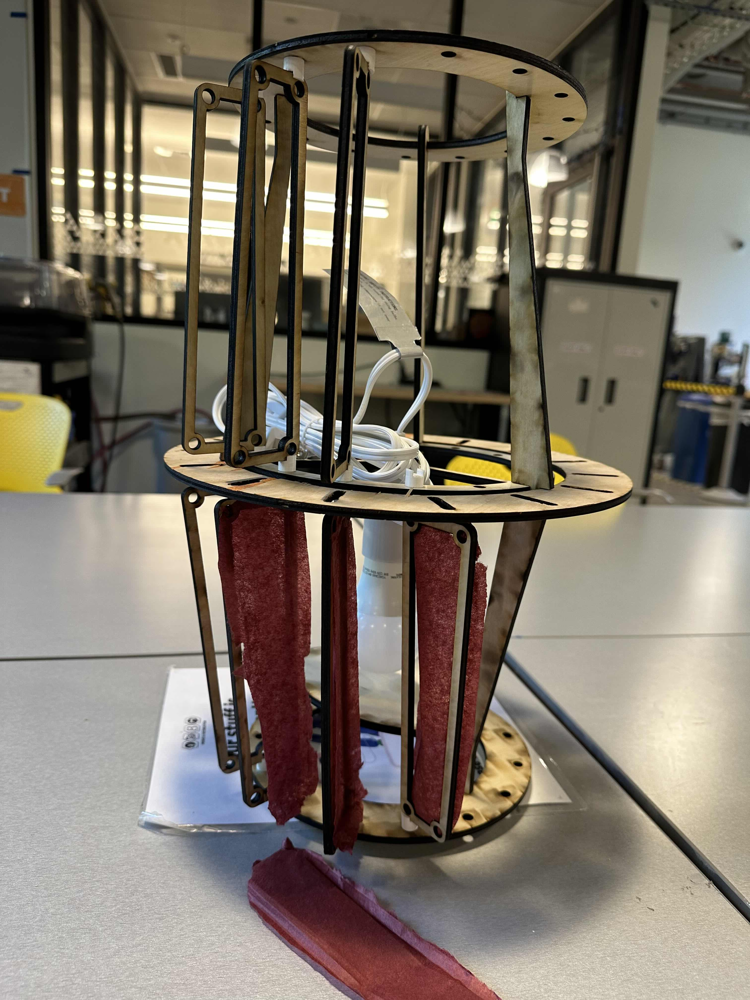

The file for lazer cutting of the lamp parts. Tolerances for this piece were difficult to calculate. I initially took multiple measurements of the wood available at the mill with 3.8mm being the maximum. But the wood I later bought was 4.6mm. This meant that I had to redo parts of my cut files for the slits to be wider. At I elongated the vehicle structural rib to keep the spacing consistent for the panels when I did this, but only expanded the slits outwards from the center for the top and bottom ones.
Lazer cutting the wood also proved to be an issue with the wood having slight warping and the laser cutter used. I initially used the larger lazer cutter as I had a larger piece of wood, but the settings that cut through pieces on the left side of the wood did not cut out on the right side. Leaving splintering when I tried to exact the pieces with some manual force. img src="week7Attachments.png" width=400>
Sketch of the structure of the lamp kit socket, my 3D printed component and the way the sails will be moved beween the two rotating rings.

For the 3D printed parts it took me a few trials to be able to get the attachment right, the interlocking of the two, and then the thicknesses. Overall I left myself too little time to make these pieces.
